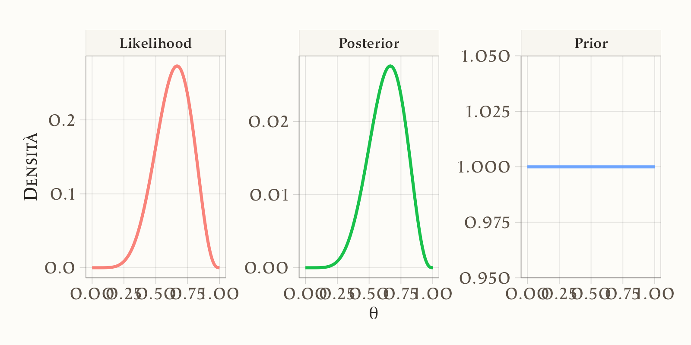
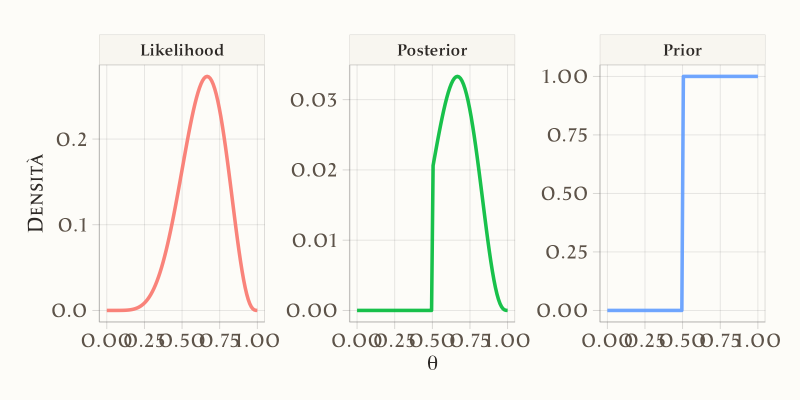
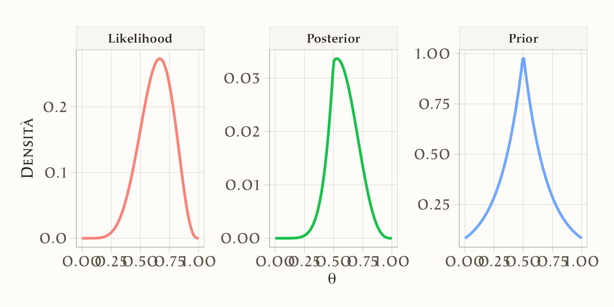
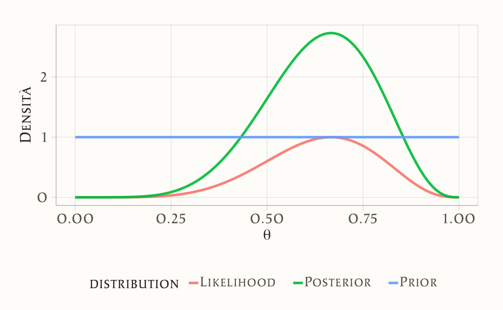
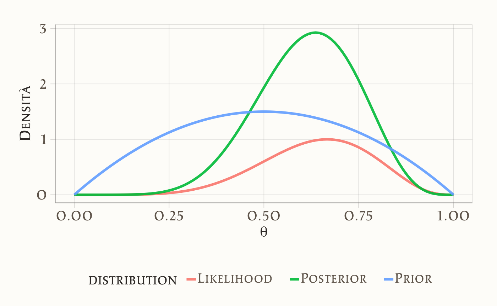
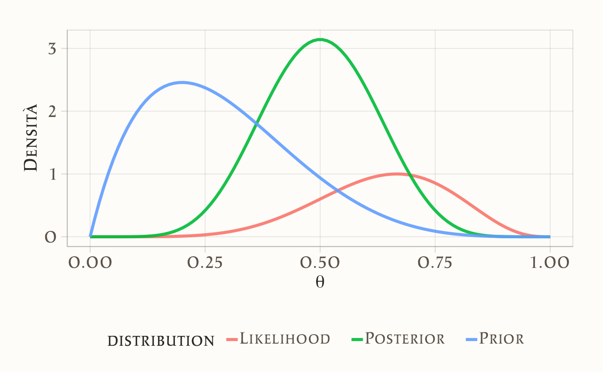
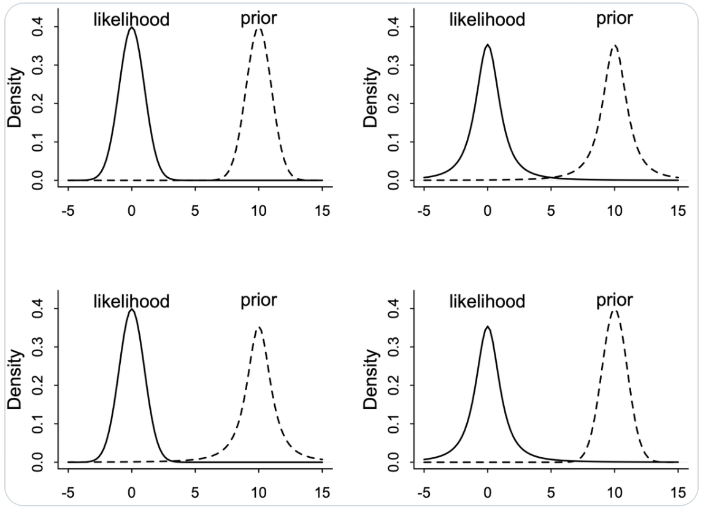

here::here("code", "_common.R") |>
source()
# Load packages
if (!requireNamespace("pacman")) install.packages("pacman")
pacman::p_load(mice)8 L’influenza della distribuzione a priori
“The prior information is not a luxury; it is a necessity. Without it, no inference is possible.”
– E.T. Jaynes, Probability Theory: The Logic of Science (2003)
Introduzione
Nei capitoli precedenti abbiamo visto come costruire distribuzioni a posteriori combinando ciò che sapevamo prima (priori) con l’informazione proveniente dai dati. Abbiamo anche imparato a riassumere e comunicare queste distribuzioni attraverso quantità sintetiche e intervalli credibili. A questo punto, una domanda diventa cruciale: quanto contano davvero i priori rispetto ai dati nell’inferenza bayesiana?
Questa domanda non è solo tecnica, ma profondamente concettuale. In psicologia, come in altre scienze, i dati raccolti sono sempre limitati, e i priori rappresentano sia la conoscenza teorica accumulata sia le assunzioni inevitabili che facciamo prima di osservare i risultati. L’equilibrio tra questi due elementi definisce la natura dell’inferenza bayesiana: non un calcolo meccanico, ma un dialogo continuo tra teoria ed evidenza empirica.
In questo capitolo esploreremo come varia l’influenza dei priori in funzione della quantità di dati e della forza delle assunzioni iniziali. Vedremo che, con pochi dati, i priori possono avere un peso decisivo, mentre con molti dati la verosimiglianza tende a dominare. Questo ci aiuterà a capire meglio perché la scelta dei priori è così importante e, allo stesso tempo, perché non bisogna temere che un prior ragionevole “distorca” i risultati quando l’evidenza empirica è abbondante.
Panoramica del capitolo
- Funzione dei prior nell’inferenza.
- Tipologie principali di prior.
- Influenza della quantità di dati.
- Effetti delle trasformazioni di scala.
- Priori coniugati e sensibilità.
8.1 La distribuzione a priori
La distribuzione a priori descrive ciò che sappiamo o ipotizziamo su un parametro prima di osservare i dati. In psicologia, questo significa poter integrare la conoscenza accumulata da studi precedenti o da esperienze cliniche nelle nostre analisi. Ad esempio, se stiamo studiando l’efficacia di un intervento di mindfulness sulla riduzione dell’ansia, potremmo già sapere da ricerche precedenti che l’effetto tipico si colloca intorno a una riduzione moderata dei sintomi. Una distribuzione a priori ben scelta ci consente di incorporare questa informazione e di rafforzare la plausibilità delle stime.
8.2 Tipologie di distribuzioni a priori
La scelta della prior (nota come elicitazione) è uno dei passaggi più delicati dell’approccio bayesiano. Non va intesa come un atto puramente soggettivo: spesso può e deve basarsi su dati empirici e conoscenze consolidate.
Si distinguono tre categorie principali:
Priori non informative. Servono quando non abbiamo conoscenze pregresse. Assegnano la stessa credibilità a tutti i valori di un parametro. Esempio: se studiamo la correlazione tra due nuove variabili psicologiche mai indagate prima, potremmo iniziare assumendo che tutte le correlazioni da –1 a +1 siano ugualmente probabili.
Priori debolmente informative. Introducono ipotesi “di buon senso” senza imporre vincoli rigidi. Esempio: nella ricerca psicologica è improbabile che un trattamento aumenti l’ansia in modo enorme (ad es. di 10 deviazioni standard). Una prior debolmente informativa può limitare la stima a un intervallo plausibile (ad es. effetti compresi tra –2 e +2 deviazioni standard), escludendo valori assurdi.
Priori informative. Riflettono conoscenze specifiche derivanti da studi precedenti o meta-analisi. Esempio: se una meta-analisi mostra che gli interventi di terapia cognitivo-comportamentale riducono in media i sintomi depressivi con un effetto di circa 0.5 deviazioni standard, possiamo usare questa informazione per formulare una prior centrata intorno a 0.5.
8.3 L’importanza della prior in base ai dati
Un principio fondamentale è che più dati osserviamo, meno la prior influisce sulle stime. Se raccogliamo centinaia di osservazioni, la verosimiglianza domina l’inferenza, rendendo meno rilevante la scelta della prior. Viceversa, con pochi dati la prior può avere un peso notevole. Questo è frequente in psicologia quando lavoriamo con campioni ridotti, ad esempio con pazienti affetti da un disturbo raro. In tali casi, una prior ben scelta può rendere le stime più stabili e coerenti.
8.4 Trasformazioni e scala dei parametri
Un punto spesso trascurato riguarda il fatto che le prior non sono “neutre” rispetto al cambiamento di scala. Ad esempio, se in uno studio sulla soddisfazione lavorativa esprimiamo un punteggio medio in una scala da 1 a 10, una prior uniforme su quella scala appare “piatta” e non informativa. Ma se trasformiamo la scala in percentuale (0–100), la stessa prior non rimane più uniforme. Questo mostra che una prior non può essere “piatta” per tutte le possibili rappresentazioni del parametro: occorre sempre riflettere su quale scala sia più significativa per il problema psicologico studiato.
8.5 Priori coniugate e metodi moderni
Storicamente, i ricercatori preferivano usare priori coniugate, che semplificano i calcoli perché producono posteriori della stessa famiglia di distribuzioni. Ad esempio, la distribuzione Beta è coniugata alla Binomiale: se osserviamo il numero di successi in un test di memoria, una prior Beta consente di calcolare facilmente la posteriori. Oggi, grazie ai metodi di campionamento (ad esempio MCMC), non è più necessario limitarsi alle priors coniugate. Possiamo scegliere priors più flessibili, anche non coniugate, che meglio riflettono le conoscenze psicologiche disponibili.
8.6 Simulazioni
Per comprendere meglio come le distribuzioni a priori influenzano le nostre conclusioni, possiamo usare delle simulazioni. La formula di Bayes
\[ p(\theta \mid y) \propto p(\theta) \times p(y \mid \theta) \] ci dice che la distribuzione a posteriori nasce dalla combinazione di due elementi:
- la distribuzione a priori, cioè ciò che crediamo prima di osservare i dati;
- la verosimiglianza, cioè quanto i dati osservati sono compatibili con ciascun valore possibile del parametro \(\theta\).
In pratica, se abbiamo i valori della verosimiglianza e della prior su una griglia di possibili valori di \(\theta\), possiamo moltiplicarli “punto per punto” e ottenere così la distribuzione a posteriori.
8.6.1 Un esempio psicologico: tassi di risposta corretta
Immaginiamo di voler stimare la probabilità \(\theta\) che uno studente risponda correttamente a una domanda di un test di memoria. Abbiamo osservato che, su 9 domande, lo studente ha risposto correttamente a 6. Questo può essere modellato con una verosimiglianza binomiale. Ora ci chiediamo: come cambiano le nostre conclusioni se assumiamo priori differenti?
8.6.2 Passo 1: definire la verosimiglianza
La verosimiglianza indica quali valori di \(\theta\) (probabilità di risposta corretta) sono più compatibili con i dati. In questo caso, i valori intorno a 0.67 (6/9) hanno la probabilità più alta.
8.6.3 Passo 2: funzione per calcolare e visualizzare la posterior
computePosterior <- function(likelihood, prior, p_grid) {
# Calcolo della posteriori non normalizzata
unstd_posterior <- likelihood * prior
# Normalizzazione
posterior <- unstd_posterior / sum(unstd_posterior)
# Preparazione dati per il grafico
data <- tibble(
theta = p_grid,
Prior = prior,
Likelihood = likelihood,
Posterior = posterior
) |>
pivot_longer(cols = c(Prior, Likelihood, Posterior),
names_to = "distribution",
values_to = "density")
# Grafico
g <- ggplot(data, aes(x = theta, y = density, color = distribution)) +
geom_line(size = 1.2) +
facet_wrap(~distribution, scales = "free_y", ncol = 3) +
labs(
x = expression(theta),
y = "Densità"
) +
theme(plot.title = element_text(hjust = 0.5),
legend.position = "none",
strip.text = element_text(size = 12, face = "bold"))
print(g)
return(posterior)
}La funzione non solo calcola la distribuzione a posteriori, ma produce anche un grafico comparativo di prior, likelihood e posterior.
8.6.4 Prior uniforme
prior1 <- rep(1, grid_points)
posterior1 <- computePosterior(likelihood, prior1, p_grid)
Commento: la prior uniforme assegna uguale credibilità a tutti i valori di \(\theta\). Il risultato è che la posteriori coincide quasi con la verosimiglianza: senza conoscenze pregresse, sono i dati (6 risposte corrette su 9) a guidare completamente l’inferenza.
8.6.5 Prior a gradino
prior2 <- ifelse(p_grid >= 0.5, 1, 0)
posterior2 <- computePosterior(likelihood, prior2, p_grid)
Commento: qui assumiamo che \(\theta\) non possa essere inferiore a 0.5 (cioè lo studente deve rispondere almeno come “a caso”). La posteriori esclude quindi qualsiasi valore sotto 0.5, anche se la verosimiglianza avrebbe assegnato loro un po’ di probabilità. Questo esempio mostra come una convinzione forte possa vincolare pesantemente le conclusioni.
8.6.6 Prior esponenziale centrata su 0.5

Commento: questa prior esprime l’idea che lo studente abbia circa il 50% di probabilità di rispondere correttamente. La posteriori viene “attirata” verso 0.5, pur tenendo conto dei dati (6 su 9 ≈ 0.67). Il risultato finale è un compromesso: né tutto nei dati, né tutto nella prior.
Questo esercizio mostra chiaramente il ruolo delle prior:
- con una prior piatta prevalgono i dati,
- con una prior vincolante (gradino) le ipotesi iniziali dominano,
- con una prior moderata (esponenziale) si ottiene un compromesso.
In psicologia, dove spesso i campioni sono piccoli, la scelta della prior può cambiare molto le conclusioni: un motivo in più per rendere trasparenti e motivate le ipotesi di partenza.
8.7 Il caso coniugato: Beta-Binomiale
Un esempio classico in cui i calcoli diventano semplici è il modello Beta-Binomiale. La distribuzione Beta è coniugata alla Binomiale: ciò significa che la forma della posteriori rimane una Beta.
plot_beta_binomial <- function(alpha, beta, y, n) {
theta <- seq(0, 1, length.out = 100)
prior_density <- dbeta(theta, alpha, beta)
likelihood <- dbinom(y, n, theta)
scaled_likelihood <- likelihood / max(likelihood)
posterior_density <- dbeta(theta, alpha + y, beta + n - y)
data <- tibble(
theta = theta,
Prior = prior_density,
Likelihood = scaled_likelihood,
Posterior = posterior_density
) |>
pivot_longer(cols = c(Prior, Likelihood, Posterior),
names_to = "distribution",
values_to = "density")
ggplot(data, aes(x = theta, y = density, color = distribution)) +
geom_line(size = 1.2) +
labs(x = expression(theta), y = "Densità") +
theme(plot.title = element_text(hjust = 0.5))
}Prior uniforme:
plot_beta_binomial(alpha = 1, beta = 1, y = 6, n = 9)
Prior informativo:
plot_beta_binomial(alpha = 2, beta = 2, y = 6, n = 9)
Prior fortemente informativo:
plot_beta_binomial(alpha = 2, beta = 5, y = 6, n = 9)
Con un prior uniforme, i dati (6 su 9) guidano quasi interamente la stima. Con un prior più informativo, la posterior si sposta nella direzione suggerita dalle credenze pregresse.
In sintesi, le simulazioni mostrano due punti chiave:
- Il peso della prior dipende dalla quantità di dati. Con pochi dati (come i 9 tentativi del nostro studente), la prior può influenzare molto la stima. Con tanti dati, la verosimiglianza tende a prevalere.
- Le scelte di prior hanno senso solo se motivate. In psicologia, una prior può derivare da ricerche precedenti (es. meta-analisi), da conoscenze teoriche (es. aspettarci che un trattamento riduca e non aumenti i sintomi) o da ipotesi ragionevoli.
L’approccio bayesiano ci permette quindi di integrare flessibilmente dati e conoscenze pregresse, arrivando a inferenze che sono al tempo stesso empiricamente fondate e teoricamente sensate.
8.8 Connessione tra intuizioni e teoria
L’equilibrio tra ciò che crediamo prima (la distribuzione a priori) e ciò che osserviamo dopo (i dati) non è solo una metafora utile: è una vera e propria necessità matematica. Questo diventa evidente guardando al caso della distribuzione Beta-Binomiale, uno dei modelli più semplici e didattici.
Il valore atteso della distribuzione a posteriori può essere riscritto in questa forma:
\[ \begin{aligned} \mathbb{E}_{\text{post}}[\theta] &= \frac{\alpha + y}{\alpha + \beta + n} \\[6pt] &= \underbrace{\frac{\alpha+\beta}{\alpha+\beta+n}}_{\text{peso del priore}} \cdot \underbrace{\frac{\alpha}{\alpha+\beta}}_{\text{media a priori}} \;+\; \underbrace{\frac{n}{\alpha+\beta+n}}_{\text{peso dei dati}} \cdot \underbrace{\frac{y}{n}}_{\text{media osservata}} . \end{aligned} \] Questa equazione ci mostra che il valore atteso a posteriori è sempre una media ponderata di due elementi:
- la media a priori (\(\alpha/(\alpha+\beta)\)), cioè ciò che pensavamo prima di raccogliere i dati;
- la proporzione osservata (\(y/n\)), cioè ciò che i dati suggeriscono.
I pesi che regolano il compromesso dipendono dal rapporto tra il numero di osservazioni \(n\) e la somma \(\alpha+\beta\) (che misura quanto “forte” è l’informazione contenuta nella prior).
- Se \(n\) è molto grande, prevalgono i dati: la posteriori riflette quasi esclusivamente le osservazioni empiriche.
- Se \(n\) è piccolo, prevale la prior: la stima finale risente molto delle convinzioni iniziali.
8.8.1 Un’analogia psicologica
Pensiamo a uno psicologo che vuole stimare la probabilità che uno studente ricordi correttamente un concetto dopo una lezione.
- Se ha già osservato centinaia di risposte di quello studente, i dati domineranno l’inferenza, e la sua idea iniziale (la prior) conterà poco.
- Se invece ha visto solo poche risposte, tenderà ad affidarsi molto di più alle convinzioni iniziali (per esempio, che lo studente abbia in generale una buona memoria).
8.8.2 Come scegliere i parametri
- Se vogliamo esprimere completa incertezza, possiamo usare \(\alpha = \beta = 1\), che assegna la stessa probabilità a tutti i valori possibili di \(\theta\) (da 0 a 1).
- Se abbiamo informazioni pregresse (es. da studi precedenti o da esperienza clinica), scegliamo \(\alpha/(\alpha+\beta)\) in modo che coincida con il valore atteso a priori desiderato.
- La quantità \(\alpha+\beta\) regola invece “quanto ci crediamo”: più è grande, più dati serviranno per spostare la nostra convinzione iniziale.
In sintesi, questa formulazione mostra in modo chiaro che l’approccio bayesiano è una combinazione bilanciata tra teoria e dati. Il risultato non è mai solo la nostra ipotesi iniziale, né solo l’evidenza empirica, ma un’integrazione delle due. Questo rende l’inferenza bayesiana particolarmente adatta alle scienze psicologiche, dove spesso lavoriamo con campioni piccoli e dove le conoscenze accumulate in precedenza sono preziose per guidare l’interpretazione dei dati.
8.9 Conflitto tra prior e verosimiglianza
Consideriamo un esempio discusso da McElreath, che mette in luce un punto importante: anche in situazioni semplici, la combinazione tra distribuzione a priori e verosimiglianza può produrre risultati poco intuitivi.
Lesson: Don’t trust intuition, for even simple prior+likelihood scenarios defy it. Four examples below, each producing radically different posteriors. Can you guess what each does?
Nella prima figura McElreath invita a riflettere su quattro diversi casi:

Nella seconda figura mostra i risultati effettivi delle combinazioni di prior e likelihood:

L’idea centrale è confrontare il comportamento della distribuzione normale (con code sottili) e della distribuzione di Student-t con 2 gradi di libertà (con code molto più spesse). Le code indicano quanto la distribuzione attribuisce ancora una certa plausibilità a valori estremi.
-
In Alto a Sinistra: Prior Normale, Likelihood Normale
y ~ Normal(mu,1)mu ~ Normal(10,1)
Questo è lo scenario “classico”. La posteriori si colloca a metà strada tra prior e likelihood, bilanciando le due informazioni. L’aggiornamento è regolare e prevedibile: i dati spostano la nostra convinzione iniziale, ma senza sorprese.
-
In Alto a Destra: Prior Student, Likelihood Student (df=2)
y ~ Student(2,mu,1)mu ~ Student(2,10,1)
Qui entrambe le distribuzioni hanno code spesse. Ciò significa che attribuiscono alta plausibilità anche a valori molto lontani dal centro. Il risultato è che la posteriori diventa più incerta e “larga”, con un compromesso meno definito. Non esiste un punto centrale netto, ma piuttosto una distribuzione che riflette la forte apertura a valori estremi.
-
In Basso a Sinistra: Prior Student, Likelihood Normale
y ~ Normal(mu,1)mu ~ Student(2,10,1)
In questo caso, la likelihood normale (con code sottili) è molto rigida: penalizza i valori lontani. Il prior Student-t, invece, non è sorpreso da valori estremi. Il risultato è che la posteriori viene guidata soprattutto dalla likelihood normale, con un effetto limitato del prior.
-
In Basso a Destra: Prior Normale, Likelihood Student
y ~ Student(2,mu,1)mu ~ Normal(10,1)
Qui accade l’opposto: il prior normale, con le sue code sottili, esercita un’influenza dominante. La likelihood Student-t, che accetterebbe valori estremi, viene “corretta” dal prior, che restringe la plausibilità attorno al proprio centro.
In sintesi, questo esercizio mostra come il comportamento della posteriori dipenda in modo cruciale dalla forma relativa di prior e likelihood. Con prior e likelihood gaussiane, l’aggiornamento è intuitivo. Appena introduciamo distribuzioni con code spesse (Student-t), la dinamica cambia: a volte prevale la prior, a volte la likelihood, e il risultato può essere molto diverso da quello che ci aspetteremmo a intuito.
Morale: nell’analisi bayesiana non basta “affidarsi al buon senso”. Quando prior e likelihood hanno forme diverse, il risultato dell’aggiornamento può essere sorprendente. Per questo è sempre necessario eseguire i calcoli, non solo ragionare intuitivamente.
Riflessioni conclusive
Il tema dell’equilibrio tra priori e dati tocca il cuore dell’approccio bayesiano. Una delle critiche più frequenti al bayesianesimo è che i risultati dipenderebbero “troppo” dai priori. Come abbiamo visto, questa affermazione è vera solo in parte: il peso relativo del prior e dei dati dipende dalla situazione.
Con pochi dati, i priori hanno un’influenza maggiore, ed è giusto che sia così: in condizioni di scarsità informativa, le nostre assunzioni teoriche forniscono una guida essenziale. Con molti dati, al contrario, l’influenza dei priori tende a ridursi, e i posteriori riflettono quasi interamente l’evidenza empirica. In entrambi i casi, il vantaggio dell’approccio bayesiano è che questo equilibrio è reso esplicito e trasparente, e non nascosto dietro formule o procedure automatiche.
Dal punto di vista psicologico, questo è un aspetto particolarmente rilevante. In un campo in cui i campioni sono spesso piccoli e le misure rumorose, i priori non sono un “problema”, ma una risorsa: permettono di incorporare conoscenze accumulate, di stabilizzare le stime e di ridurre il rischio di interpretazioni fuorvianti. Allo stesso tempo, l’analisi di sensibilità — cioè il confronto tra posteriori ottenuti con priori diversi — ci aiuta a verificare quanto i risultati dipendano dalle scelte iniziali.
Questo capitolo mostra quindi che la forza dell’inferenza bayesiana non sta nel dare tutto il potere ai dati o tutto ai priori, ma nel bilanciare i due in modo coerente. Nei capitoli successivi vedremo come questo equilibrio giochi un ruolo decisivo anche nella costruzione di modelli più complessi e, soprattutto, nella loro valutazione comparativa.
Bibliografia
Johnson, A. A., Ott, M., & Dogucu, M. (2022). Bayes Rules! An Introduction to Bayesian Modeling with R. CRC Press.